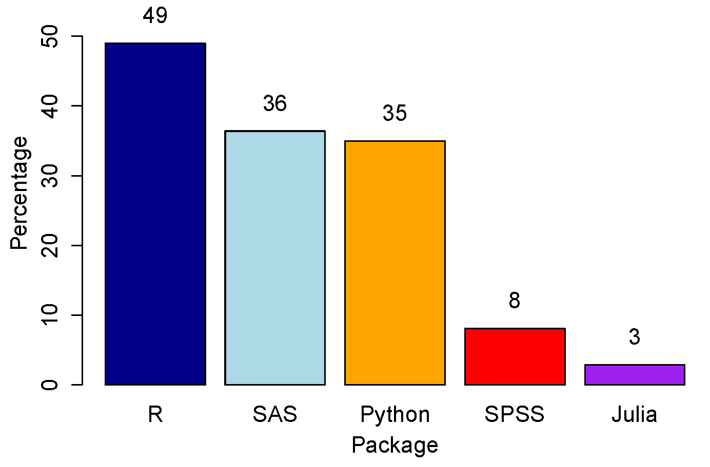
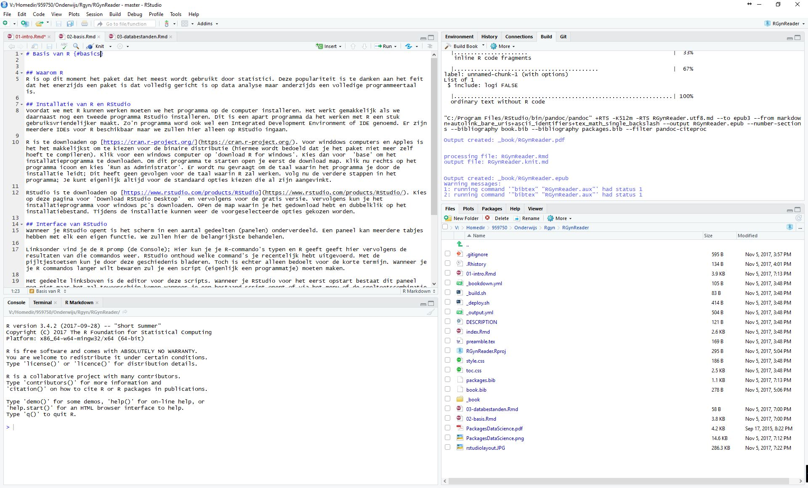

Hoofdstuk2 Introductie
2.1 Waarom R
R is op dit moment het pakket dat het meest wordt gebruikt door statistici. Deze populariteit is te danken aan het feit dat het enerzijds een pakket is dat volledig gericht is op data-analyse maar anderzijds een volledige programmeertaal is. Dit in tegenstelling tot enerzijds SPSS en SAS waarin slechts in beperkte mate geprogrammeerd kan worden en aan de andere kant bijvoorbeeld Python een algemene programmeertaal die veel gebruikt wordt voor data-analyse maar die hier niet van het begin af aan voor is ontworpen.  Een kenmerk van R dat in belangrijke mate aan deze populariteit heeft bijgedragen is ongetwijfeld dat dit programma volledig gratis is. Ook is de broncode open en in het publieke domein. Iedereen kan dus (in principe) zelf wijzigingen aanbrengen en voorstellen deze wijzigingen ook in de openbare distributie van R aan te brengen. Dit betekent in principe ook dat er geen fabrikant van R is bij wie je terecht kunt als je vragen hebt. Gelukkig zijn er ook genoeg andere bronnen waar je voor ondersteuning terecht kunt. R werkt met een modulair systeem: er is slechts een beperkte basis functionaliteit, maar R is uitbreidbaar door middel van verschillende packages. Er is tegenwoordig een duizelingwekkende hoeveelheid van deze uitbreidingspakketten. De kwaliteit kan echter wisselend zijn (al is er wel een zekere mate van controle op de packges die via de R-site worden aangeboden).
2.2 Installatie van R en RStudio
Voordat we met R kunnen werken moeten we het programma op de computer installeren. Het werkt gemakkelijk als we daarnaast nog een tweede programma Rstudio installeren. Dit is een apart programma dat het werken met R een stuk gebruiksvriendelijker maakt. Zo’n programma wordt ook wel een Integrated Development Environment of IDE genoemd. Er zijn meerdere IDEs voor R beschikbaar maar we zullen hier alleen op RStudio ingaan.
R is te downloaden op https://cran.r-project.org/. /). Voor windowscomputers en Apples is het het makkelijkst om te kiezen voor de binaire distributie (hiermee wordt bedoeld dat je het pakket niet meer zelf hoeft te compileren). Klik voor een windowscomputer op ‘download R for Windows’. Kies dan voor ‘base’ om het installatieprogramma te downloaden. Om dit programma te starten open je eerst de download map. Klik nu rechts op het programma icoon en kies ‘Run as Administrator’. Er wordt nu gevraagd om de taal waarin het programma je door de installatie leidt; Dit heeft geen gevolgen voor de taal waarin R zal werken. Volg nu de verdere stappen in het programma; Je kunt eigenlijk altijd voor de standaard opties kiezen die al zijn aangevinkt.
RStudio is te downloaden op https://www.rstudio.com/products/RStudio. Kies op deze pagina voor ‘Download RStudio Desktop’ en vervolgens voor de gratis versie. Vervolgens kun je het installatieprogramma voor windows-pc’s downloaden. Open de map waarin je het gedownload hebt en dubbelklik op het installatiebestand. Tijdens de installatie kunnen weer de voorgeselecteerde opties gekozen worden.
2.3 Interface van RStudio
Wanneer je RStudio opent is het scherm in een aantal gedeelten (panelen) onderverdeeld. Een paneel kan meerdere tabjes hebben met elk een eigen functie. We zullen hier de belangrijkste behandelen. 
Linksonder vind je de R prompt (de Console); Hier kun je je R-commando’s typen en R geeft hier vervolgens de resultaten van die commando’s weer. RStudio onthoud welke commando’s je recentelijk hebt uitgevoerd. Met de pijltjestoetsen kun je door deze geschiedenis bladeren. Toch is echter alleen bedoeld voor de korte termijn. Wanneer je je R commando’s langer wilt bewaren, zul je een script (eigenlijk een programmaatje) moeten maken.
Het gedeelte linksboven is de editor voor deze scripts. Wanneer je RStudio voor het eerst opstart bestaat dit paneel nog niet maar het zal tevoorschijn komen wanneer je een bestaand script opent of via het menu of de sneltoetscombinatie Ctrl+Shift+N kiest om een nieuw script te openen. Een script is een reeks commando’s om bijvoorbeeld een analyse uit te voeren. Je kunt een script opslaan door te kiezen voor ‘save’ of ‘save as’ in het ‘file’ menu. Zo blijft bewaard welke commando’s je precies hebt uitgevoerd en dus ook bijvoorbeeld hoe je precies tot je conclusies van je analyse komt. Een R script heeft meestal de extensie .R en is een gewoon tekst bestand (dus te openen in elke tekst editor).
Je kunt het hele script uitvoeren door tegelijkertijd de toetsen Ctrl+Alt+R in te drukken. Ook kun je gedeeltes van een script uitvoeren door deze te selecteren en Ctrl+Enter in te drukken. Wanneer je deze toetsen combinatie gebruikt als je niet eerste een gedeelte van een script hebt geselecteerd maar je cursor wel in dit gedeelte van het beeldscherm staat wordt de regel waar de cursor staat uitgevoerd. Wanneer je meerdere scripts tegelijkertijd opent komen deze naast elkaar in verschillende ‘tabs’ te staan.
Rechtsonder vind je een tab ‘Files’ met bestanden in de werkdirectory en een tab ‘Plots’ waarin plaatjes die je maakt worden weergegeven. In het paneel rechtsboven vind je het tabje ‘History’ waarin de commando’s staan die het meest recent zijn uitgevoerd. Ook vind je hier het tabblad ‘Environment’. Dit geeft alle objecten weer die op dit moment gedefinieerd zijn. We komen hier later op terug.